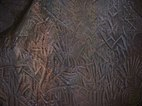
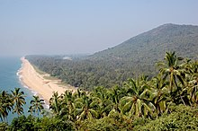

According to the Sangam classic Purananuru, the Chera king Senkuttuvan conquered the lands between Kanyakumari and the Himalayas.Lacking worthy enemies, he besieged the sea by throwing his spear into it.According to the 17th-century Hindu mythology work Keralolpathi, the lands of Kerala were recovered from the sea by the axe-wielding warrior sage Parasurama, the sixth avatar of Vishnu (hence, Kerala is also called Parasurama Kshetram 'The Land of Parasurama' in Hindu mythology).Parasurama threw his axe across the sea, and the water receded as far as it reached. According to legend, this new area of land extended from Gokarna to Kanyakumari.The land which rose from sea was filled with salt and unsuitable for habitation; so Parasurama invoked the Snake King Vasuki, who spat holy poison and converted the soil into fertile lush green land. Out of respect, Vasuki and all snakes were appointed as protectors and guardians of the land. P. T. Srinivasa Iyengar theorised, that Senguttuvan may have been inspired by the Parasurama legend, which was brought by early Aryan settlers. Another much earlier Puranic character associated with Kerala is Mahabali, an Asura and a prototypical just king, who ruled the earth from Kerala. He won the war against the Devas, driving them into exile. The Devas pleaded before Lord Vishnu, who took his fifth incarnation as Vamana and pushed Mahabali down to netherworld to placate the Devas. There is a belief that, once a year during the Onam festival, Mahabali returns to Kerala.[44] The Matsya Purana, among the oldest of the 18 Puranas,uses the Malaya Mountains of Kerala (and Tamil Nadu) as the setting for the story of Matsya, the first incarnation of Vishnu, and Manu, the first man and the king of the region.
A substantial portion of Kerala including the western coastal lowlands and the plains of the midland may have been under the sea in ancient times. Marine fossils have been found in an area near Changanassery, thus supporting the hypothesis.Pre-historical archaeological findings include dolmens of the Neolithic era in the Marayur area of the Idukki district, which lie on the eastern highland made by Western Ghats. They are locally known as "muniyara", derived from muni (hermit or sage) and ara (dolmen).Rock engravings in the Edakkal Caves, in Wayanad date back to the Neolithic era around 6000 BCE.Archaeological studies have identified Mesolithic, Neolithic and Megalithic sites in Kerala. The studies point to the development of ancient Kerala society and its culture beginning from the Paleolithic Age, through the Mesolithic, Neolithic and Megalithic Ages. Foreign cultural contacts have assisted this cultural formation; historians suggest a possible relationship with Indus Valley civilization during the late Bronze Age and early Iron Age.
Kerala has been a major spice exporter since 3000 BCE, according to Sumerian records and it is still referred to as the "Garden of Spices" or as the "Spice Garden of India".[81][82]: 79 Kerala's spices attracted ancient Arabs, Babylonians, Assyrians and Egyptians to the Malabar Coast in the 3rd and 2nd millennia BCE. Phoenicians established trade with Kerala during this period. Arabs and Phoenicians were the first to enter Malabar Coast to trade Spices. The Arabs on the coasts of Yemen, Oman, and the Persian Gulf, must have made the first long voyage to Kerala and other eastern countries.They must have brought the Cinnamon of Kerala to the Middle East. The Greek historian Herodotus (5th century BCE) records that in his time the cinnamon spice industry was monopolized by the Egyptians and the Phoenicians. The Land of Keralaputra was one of the four independent kingdoms in southern India during Ashoka's time, the others being Chola, Pandya, and Satiyaputra. Scholars hold that Keralaputra is an alternate name of the Cheras, the first dominant dynasty who ruled Kerala, and had its capital at Karur.These territories once shared a common language and culture, within an area known as Tamilakam. The region around Coimbatore was ruled by the Cheras during Sangam period between 1st and the 4th centuries CE and it served as the eastern entrance to the Palakkad Gap, the principal trade route between the Malabar Coast and Tamil Nadu. Along with the Ay kingdom in the south and the Ezhimala kingdom in the north, the Cheras formed the ruling kingdoms of Kerala in the early years of the Common Era (CE). It is noted in Sangam literature that the Chera king Uthiyan Cheralathan ruled most of modern Kerala from his capital in Kuttanad, and controlled the port of Muziris, but its southern tip was in the kingdom of Pandyas,which had a trading port sometimes identified in ancient Western sources as Nelcynda (or Neacyndi) in Quilon.Tyndis was a major center of trade, next only to Muziris, between the Cheras and the Roman Empire.The lesser known Ays and Mushikas kingdoms lay to the south and north of the Chera regions, respectively.Pliny the Elder (1st century CE) states that the port of Tyndis was located at the northwestern border of Keprobotos (Chera dynasty). The North Malabar region, which lies north of the port at Tyndis, was ruled by the kingdom of Ezhimala during Sangam period. The port at Tyndis which was on the northern side of Muziris, as mentioned in Greco-Roman writings, was somewhere around Kozhikode. Its exact location is a matter of dispute. The suggested locations are Ponnani, Tanur, Beypore-Chaliyam-Kadalundi-Vallikkunnu, and Koyilandy. According to the Periplus of the Erythraean Sea, a region known as Limyrike began at Naura and Tyndis. However the Ptolemy mentions only Tyndis as the Limyrike's starting point. The region probably ended at Kanyakumari; it thus roughly corresponds to the present-day Malabar Coast. The value of Rome's annual trade with the region was estimated at 50,000,000 sesterces. According to Pliny the Elder, goods from India were sold in the Empire at 100 times their original purchase price. Pliny the Elder mentioned that Limyrike was prone to raids by pirates. The Cosmas Indicopleustes mentioned that the Limyrike was a source of Malabar peppers.In the last centuries BCE the coast became important to the Greeks and Romans for its spices, especially Malabar pepper. The Cheras had trading links with China, West Asia, Egypt, Greece, and the Roman Empire.In foreign-trade circles the region was known as Male or Malabar.Muziris, Tyndis, Naura, Nelcynda, and Barace, were among the principal ports at that time. Contemporary Sangam literature describes Roman ships coming to Muziris in Kerala, laden with gold to exchange for Malabar pepper. One of the earliest western traders to use the monsoon winds to reach Kerala was Eudoxus of Cyzicus, around 118 or 166 BCE, under the patronage of Ptolemy VIII, king of the Hellenistic Ptolemaic dynasty in Egypt. Roman establishments in the port cities of the region, such as a temple of Augustus and barracks for garrisoned Roman soldiers, are marked in the Tabula Peutingeriana, the only surviving map of the Roman cursus publicus. Merchants from West Asia and Southern Europe established coastal posts and settlements in Kerala. The Israeli (Jewish) connection with Kerala started in 573 BCE. Arabs also had trade links with Kerala, starting before the 4th century BCE, as Herodotus (484–413 BCE) noted that goods brought by Arabs from Kerala were sold to the Israelis [Hebrew Jews] at Eden. In the 4th century, the Knanaya or Southist Christians also migrated from Persia and lived alongside the early Syriac Christian community known as the St. Thomas Christians who trace their origins to the evangelistic activity of Thomas the Apostle in the 1st century. Mappila was an honorific title that had been assigned to respected visitors from abroad; Israelite (Jewish), Syrian Christian, and Muslim immigration account for later names of the respective communities: Juda Mappilas, Muslim Mappilas, and Nasrani Mappilas.The earliest Saint Thomas Christian Churches, Cheraman Jumu'ah Masjid (traditionally dated to "629 CE" by the Mappilas)—regarded as "the first mosque of India"—and Paradesi Synagogue (1568 CE)—the oldest active synagogue in the Commonwealth of Nations—were built in Kerala.
